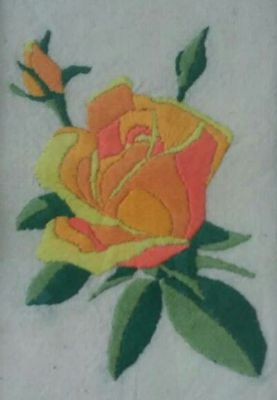

Вышивка гладью позволяет создать невероятной красоты узоры, а вышитые работы напоминают живописные картины. Рассматривая вышивку, может показаться, что это сложное мастерство, доступное лишь избранным. Однако это не так. Да, вышивание, как и любое другое рукоделие, требует терпения и прилежания, чтобы его освоить, особенно если вы хотите добиться в этом мастерства. Однако вышивать гладью могут даже начинающие рукодельницы.
Источник: https://xn--b1agjdzfh7a3a.xn--p1ai/blog/vyshivka-gladju-dlja-nachinajushhih.html
